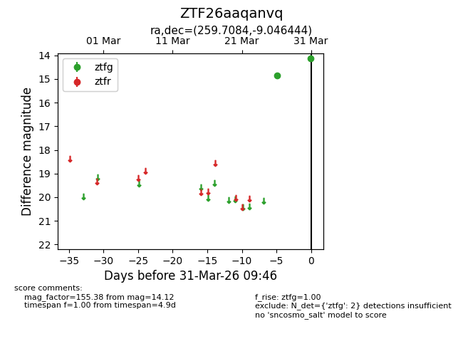
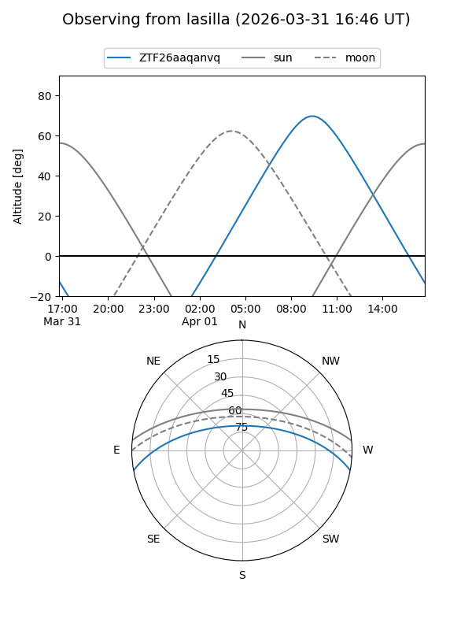
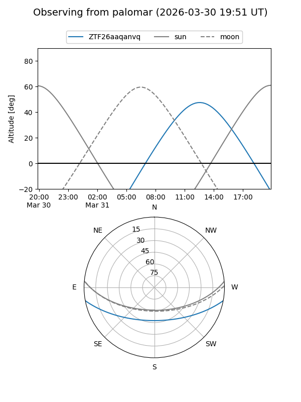

ZTF26aaqanvq
Target ZTF26aaqanvq at 2026-03-31 09:49
Aliases and brokers:
FINK: link
Lasair: link
ALeRCE: link
alt names
ZTF26aaqanvq (ztf,fink_ztf)
Coordinates:
equatorial (ra, dec) = 259.7084,-9.04644
equatorial (HMS+DMS) = 17:18:50.01,-09:02:47.20
galactic (l, b) = (13.6886,+15.89386)
Flags:
Photometry:
last ztfg=14.12
2 ztfg detections
Lightcurve

Visibility


Additional plots